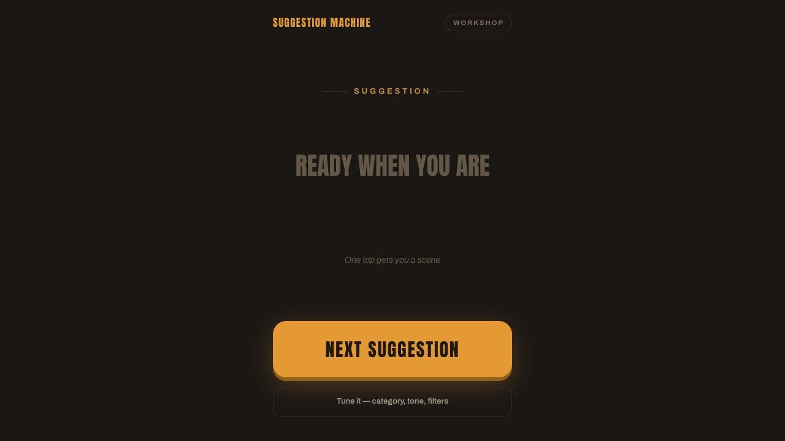

Audience suggestions without the logistical faff
Improv shows often ask the audience for suggestions such as locations, professions or themes—the three things we ask for most often in Awkward Actors shows.
Collecting them on paper or by shouting them out can become awkward to organise during a live performance. Suggestion Machine gives the audience a simple phone form, lets the team review what has arrived, and puts the chosen suggestion clearly on the show screen.
Create the show and its suggestion boxes.
Audience members respond through a QR code.
Approve suitable submissions backstage.
Put the chosen suggestion on the show screen.
Retain the best ideas in a reusable bank.

Workshop mode
One big button
For a rehearsal, workshop or warm-up, one tap quickly produces a new scene suggestion. You can choose the kind of prompt you want—or draw from suggestions collected at previous real shows.
The right screen at the right moment
The audience gets a quick submission form. The person running the show gets tools to organise and choose suggestions. Performers and the audience see the selected prompt clearly when it is time to begin the scene.
The system can keep accepting ideas throughout a performance, or close submissions when the show starts. Afterward, useful suggestions can be saved into the bank for workshops and future shows.
A tool shaped by practice
Suggestion Machine grew from real use with the Awkward Actors. It brings together workshop prompts, QR-code audience collection, optional moderation, a show display and a reusable bank in one coherent tool.
“From the audience to the stage.”
Could it help your show?
Suggestion Machine is a working prototype for improv groups, workshops and live performances.
Enquire by email